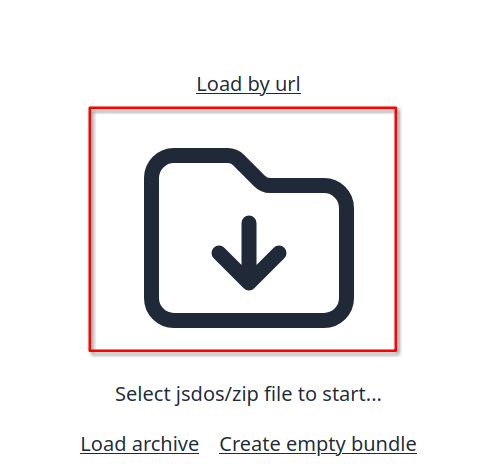
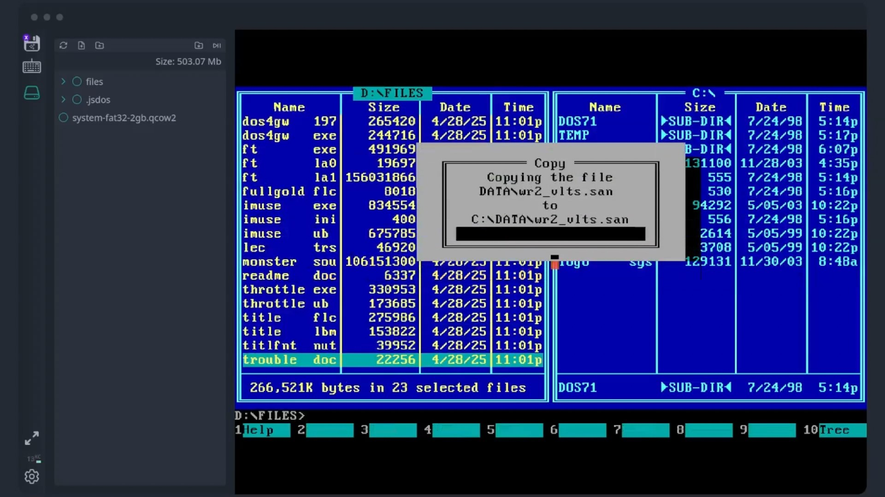
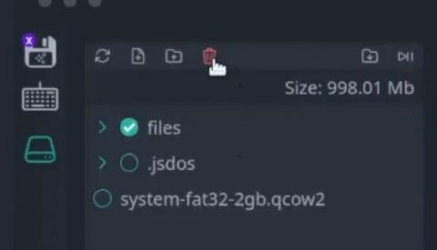

MS-DOS Sockdrive (2GB)
Creating bundle with MS-DOS game (using Sockdrive)
Tutorial Video:
To create a bundle, you need to perform the following steps:
1. Open Studio and download base image
First, open Game Studio and then press DOS v7.1 to download the MS-DOS 7.1 base image.
Now load the base image using the Load button. 
2. Run emulator and add program files
Press the "Run" button. 
When the emulator starts, open the File System panel using the disk icon. Use the upload file or upload folder button to add your files to the bundle File System.

3. Boot from base image and copy game files using Volkov Commander
Mount file system with game files to drive D, type:
To boot from base image type in console:
When ms-dos finishes loading, start Volkov Commander using this command:
Copy all files needed by game from disk D: to disk C:

Now edit C:\autoexec.bat with Volkov Commander (F4 key). Add game executable to the end of this file.
Exit Volkov Commander with F10 key.
3. Prepare js-dos bundle
Please delete all temporary files using trash button:

Restart emulation and add boot c: to DOSBox [autoexec] section.

Setup autoexec: 
4. Test bundle and export it
Run emulation, test it and then export using download button.

When a bundle is ready, the browser will prompt you to save it to your computer.
CD-ROM support
Some games require CD-ROM emulation to start. Sometimes, you can simply use the SUBST command. You can mount a folder to a drive letter, like this:
Then you can access drive D:, which will be mapped to the given folder. However, some games can check if this drive is actually a CD-ROM or not. In that case, you can use FakeCd or FakeDr.
Here you can download FakeCD. This archive contains a doc file with documentation, but in the simplest case, you can use it like this:
This command will map folder CD to drive D: using a driver. This works in most cases. If not, you can try to use the even more powerful FakeDr - you can get it and read the documentation on the program website.
Tutorial Video: